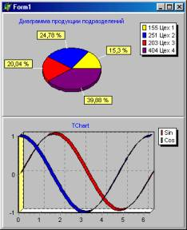
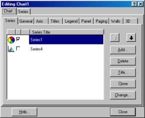

Компонент Chart
Оформил: DeeCo
Позволяет строить различные диаграммы
и графики.
Является контейнером объектов Series типа TChartSeries –
серий
данных, характеризующихся различными стилями отображения. Каждая серия
будет
соответствовать одной кривой на графике. Свойства:
AllowPanning
|
Определяет возможность
пользователя прокручивать наблюдаемую часть графика во время
выполнения,
нажимая правую кнопку мыши:
pmNone – прокрутка
запрещена;
pmHorizontal – разрешена прокрутка только в
горизонтальном
направлении;
pmVertical – только в вертикальном
pmBoth – в
обоих
напрвлениях
|
AllowZoom
|
Позволяет пользователю
изменять во время выполнения масштаб изображения, вырезая
фрагменты
диаграммы или графика курсором мыши.
|
Title
|
Определяет заголовок
диаграммы
|
Foot
|
Определяет подпись под
диаграммой. По умолчанию отсутствует. Текст подписи определяется
подсвойством Text
|
Frame
|
Определяет рамку вокруг
диаграммы
|
Legend
|
Легенда диаграммы
– список обозначений
|
MarginLeft,
MarginRight
MarginTop
MarginButtom
|
Значения левого,
правого, верхнего и нижнего полей
|
ButtomAxis
LeftAxis
RightAxis
|
Эти свойства определяют
характеристики соответственно нижней, левой и правой осей. Задание
этих
свойств имеет смысл для графиков и некоторых других типов
диаграмм
|
LeftWall
ButtomWall
BackWall
|
Эти свойства определяют
характеристики соответственно левой, нижней и задней граней
области
трехмерного отображения графика
|
SeriesList
|
Список серий данных,
отображаемых в компоненте
|
View3d
|
Разрешает или запрещает
трехмерное отображение диаграммы
|
View3dOptions
|
Характеристики
трехмерного отображения
|
Chart3DPersent
|
Масштаб трехмерности
(толщина диаграммы, ширина лент
графика) | Редактор диаграмм
вызывается:
Øкнопкой с многоточием рядом с названием свойства в
инспекторе
объектов;
Øдвойным щелчком на компоненте Chart при
проектировании
формы;
Øли выбором команды Edit Chart в контекстном меню
компонента
Chart при проектировании формы.
Для задания отображаемых
значений надо
использовать методы серий Series:
ØClear – очищает
серию от
занесенных ранее данных.
ØAdd – позволяет добавить в диаграмму
новую
точку:
Add(Const AValue:Double; Const ALabel:String;
AColor:TColor)
Параметр AValue соответствует
добавляемому
значению, параметрALabel – название, которое буде отображаться на
диаграмме и в легенде, параметр AColor – цвет. ПараметрALabel
необязательный, его можно задавать пустым:’’.
ØAddXY –
позволяет
добавить новую точку в график функции:
AddXY(Const AXValue, AYValue:
Double;
Const ALabel: String; AColor: TColor);
Параметры AXValue
иAYValue соответствуют аргументу и функции, параметры
ALabel и AColor – те же, что и в методе Add.
Создадим
приложение, которое будет выводить круговую диаграмму и графики Sin и
Cos:
1.
Открыть новое приложение. Поместить на него 2 панели Panel, так чтобы
они
занимали всю область формы.
Panel1.Align=alTop,
Panel2.Align=alButtom, чтобы
привязать из к верхней и нижней границам формы соответственно.
Поместить
на
Panel1 компоненту Chart1 и на Panel2 компоненту Chart2. Задать свойству
Align этих компонент значение alClient, чтобы они при
изменении
размера формы изменяли свои размеры вместе с панелями.
2.ерейти в
редактор
диаграмм Chart1. На закладке Chart, на закладке Series
щелкнуть на
кнопке Add – добавить серию. Вы попадаете в окно, в котором можно
выбрать
тип диаграммы или графика. В данном случае выберем Pie – круговая
диаграмма.
Закладка Titles – позволяет задавать заголовок
диаграммы
(Диаграмма продукции подразделений)
Закладка Legend –
позволяет
задавать позволяет задавать параметры отображения легенды легенды
диаграммы
(списка обозначений) или вообще убирать ее с экрана.
Закладка Panel
–
определяет вид панели, на которой отображается диаграмма.
Закладка 3D
– позволяет определить внешний вид диаграммы: сдвиг, наклон, толщину и
т.д.
Результат применения различных опций сразу отображается на
условном
примере.
3.В редакторе диаграмм Chart1, на закладке Series можно
выбрать дополнительные характеристики отображения серии.
На закладке
Format для круговой диаграммы можно включить опцию Circled Pie,
которая
обеспечит при любом размере компонента Chart отображение диаграммы в
виде
круга.
 На
закладке Marks кнопки группы Style определяют, что будет написано
на
ярлычках, относящихся к отдельным сегментам диаграммы: Value – значение,
Percent
– проценты, Label – названия данных и т.д. В приведенном примере
включена кнопка
Percent, а на закладке General установлен шаблон процентов,
обеспечивающий
отображение значений с точностью два десятичных знака.
4.сть
возможность
отображать одни и те же данные с помощью разных типов диаграмм. Для
этого в
редакторе диаграмм Chart1, на закладке Chart, нажав на
закладке
Series кнопку Clone, а затем для этой новой серии нажать
кнопку
Change (изменить) и выбрать другой тип диаграммы, например, Bar.
Чтобы эти два разных типа диаграммы не появлялись на одном рисунке
одновременно,
нужно выключить индикатор этой новой серии на закладке Series, а
потом
предосватить пользователю выбрать тот или иной вид отображения
диаграммы,
например с помоью событи OnClick для диаграммы (ниже будет показано как
это
делается).
5.овторить описанные выше действия для задания свойств
компонента
Chart2: надо задать две серии и выбрать тип диаграммы Line. Для
графиков
на закладках Axis и Walls можно задать координатные характеристики осей и
трехмерных граней графика.
6.Осталось написать код, задающий данные,
которые
нужно отображать. Для Chart1 зададим в круговой диаграмме
некоторые
константные данные, а в графиках для Chart2 – функции Sin и Cos.
Процедуру загрузки данных можно включить просто в событие OnCreate
формы:
procedure TForm1.FormCreate(Sender: TObject);
const
A1 = 155;
A2 = 251;
A3 = 203;
A4 = 404;
var
i: word;
beginWith Series1 dobegin Clear;
Add(A1, 'Цех 1', clYellow);
Add(A2, 'Цех 2', clBlue);
Add(A3, 'Цех 3', clRed);
Add(A4, 'Цех 4', clPurple);
end;
Series2.Clear;
Series3.Clear;
for i := 0 to 100 do
begin
Series2.AddXY(0.02 * Pi * i, sin(0.02 * Pi * i), '', clRed);
Series3.AddXY(0.02 * Pi * i, cos(0.02 * Pi * i), '', clBlue);
end;
end;
Операторы Clear нужны, если в процессе работы
приложения нужно обновлять данные. без этих операторов повторное
выполнение
методов Add и AddXY только добавит новые точки, не удалив прежние.
Если
для
данных, отображаемых в диаграмме предусмотрены две серии разных видов Pie
и Bar: Series1 и Series4, то в событие OnClick диаграммы Chart1
можно ввести процедуру, изменяющую по требованию пользователя тип
диаграммы.
Для того, чтобы загрузить данные в Series4 и
сделать эту
диаграмму в первый момент невидимой, можно вставить в конце приведенной
ранее
процедуры операторы:
Series4.Assign(Series1);//переписывает данные из
Series1 в Series4
Series4.Active:=false;//делает
невидимой
Series4
Смена типа диаграммы делает процедура:
procedure
TForm1.Chart1Click(Sender: TObject);
begin
Series1.Active:= not
Series1.Active;
Series4.Active:= not Series4.Active;
end;
Для
компонента Chart2 свойства AllowPanning и AllowZoom
установлены в true, что позволяет прокрычивать наблюдаемую часть графика
вовремя
выполнения, нажимая правую кнопку мыши, и изменять во время выполнения
масштаб
изображения, вырезая фрагменты диаграммы или графика курсором мыши.
Компонент
Chart также имеет метод Print, обеспечивющий печать. Предварительно
может быть
выполнен метод PrintPortrait, задающий книжную (вертикальную) ориентацию
бумаги,
или метод PrintLandscape, задающий альбомную (горизонтальную)
ориентацию.
Масштабировать размер печатаемого графика можно, вызвав предварительно
метод
PrintRect:
procedure PrintRect ( Const R : TRect ) ;
в котрором
параметр R
определяет размер области принтера, в которой осуществляется печать.
unit
UChart;
interfaceusesWindows, Messages, SysUtils, Classes,
Graphics, Controls, Forms, Dialogs, Series, TeEngine, TeeProcs, Chart,
ExtCtrls;
typeTForm1 = class(TForm)Panel1: TPanel;
Panel2:
TPanel;
Chart1: TChart;
Chart2: TChart;
Series1:
TPieSeries;
Series2: TLineSeries;
Series3: TLineSeries;
Series4:
TBarSeries;
procedure FormCreate(Sender: TObject);
procedure
Chart1Click(Sender: TObject);
private { Private declarations}
public { Public declarations }
end;
var
Form1: TForm1;
implementation
{$R *.DFM}
procedure
TForm1.FormCreate(Sender: TObject);
const
A1 = 155;
A2 = 251;
A3 = 203;
A4 = 404;
var
i: word;
begin
with Series1 do
begin
Clear;
Add(A1, 'Цех 1', clYellow);
Add(A2, 'Цех 2 ', clBlue);
Add(A3, ' Цех 3 ', clRed);
Add(A4, ' Цех 4', clPurple);
end;
Series4.Assign(Series1);
Series4.Active := false;
Series2.Clear;
Series3.Clear;
for i := 0 to 100 do
begin
Series2.AddXY(0.02 * Pi * i, sin(0.02 * Pi * i), '', clRed);
Series3.AddXY(0.02 * Pi * i, cos(0.02 * Pi * i), '', clBlue);
end;
end;
procedure TForm1.Chart1Click(Sender:
TObject);
begin
Series1.Active := not Series1.Active;
Series4.Active := not Series4.Active;
end;
end.
|